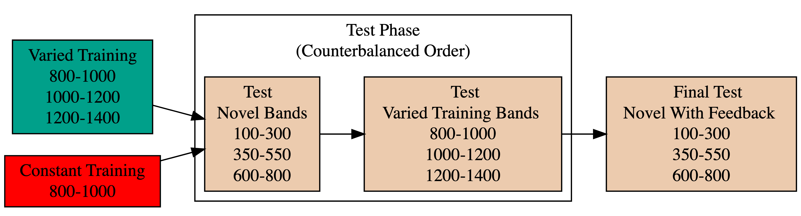
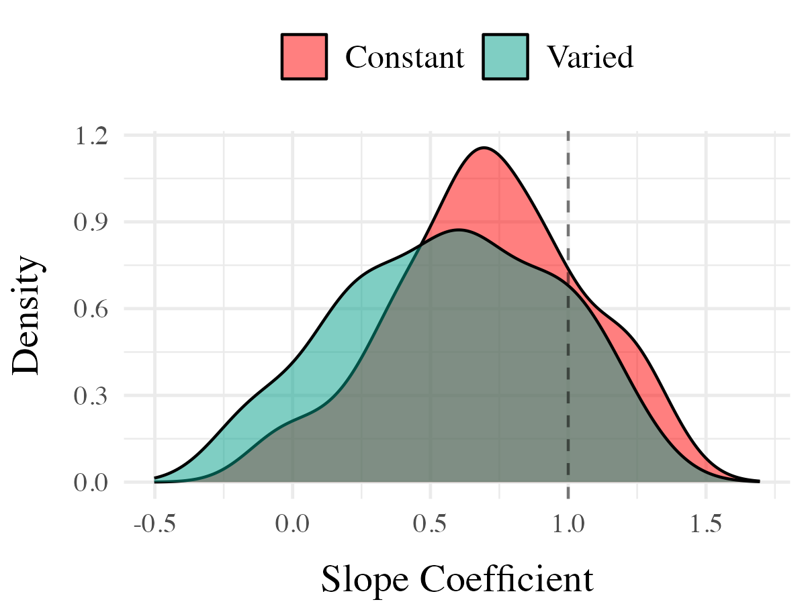
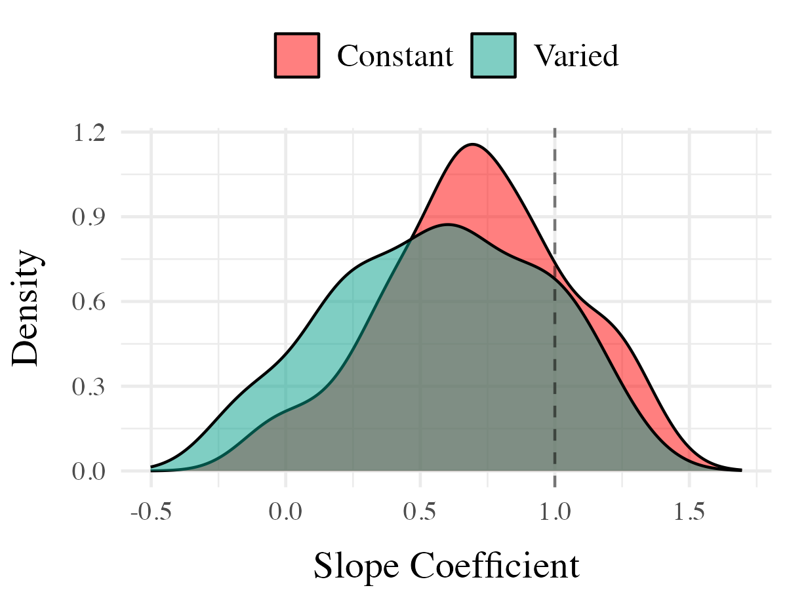
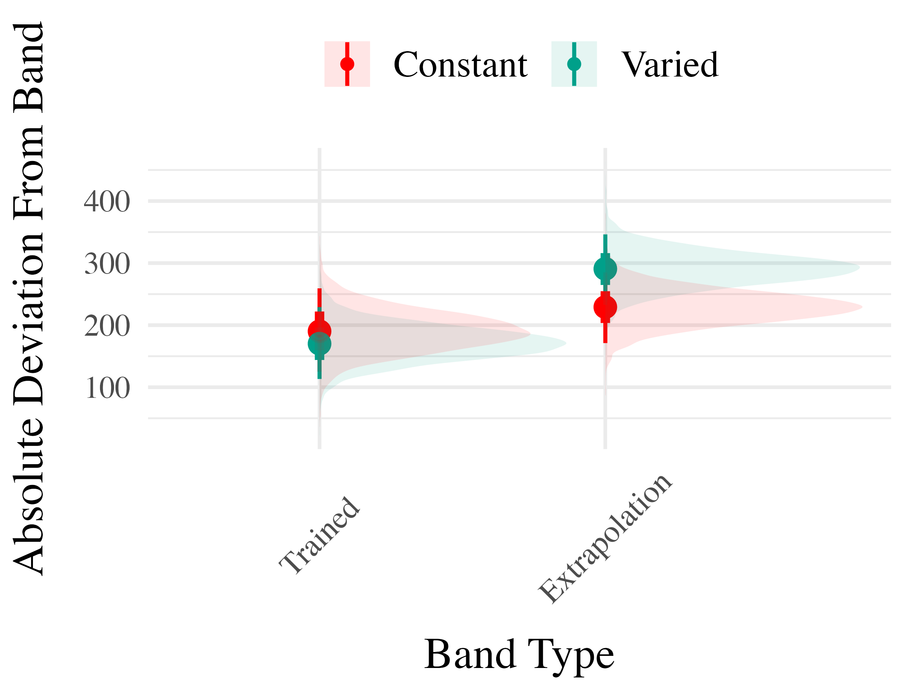

The Role of Variability in Learning Generalization: A Computational Modeling Approach
![]()
Indiana University
May 28, 2204
Common Empirical Patterns
Training
- Both training conditions complete the same number of training trials.
- Varied group has worse training performance.

Testing
- Tested from novel conditions.
- Varied group has better test performance

Issues with previous research
- Assumptions about what is encoded
- Assumptions about the formation of abstractions
- Aggregation issues and similarity confounds

- If generalization decays exponentially with distance, constant groups 1 and 2 may have far less generalization potential to the testing condition.
- performance of individual constant groups often not reported in analyses.
Designs that avoid similarity issue
Kerr & Booth 1978

- bean bag throwing task
- Constant and varied conditions train from distinct positions
- Both groups are tested from the position where the constant group trained
- Impressive demonstration of varied training outperforming constant training
Experiment 1 Design

- Constant trains from one position (760)
- 200 trials
- Varied trains from two positions (610 and 910)
- 100 trials per position
- Both groups are tested from all three training positions, and a new position novel to both groups (835)
Project 1 - Experiment 1 Results
Training

Testing

Experiment 2 Design

Project 1 - Experiment 2 Results
Training

Testing

Project 1 Computational Model


Computing Similarity
- Euclidean distance between each training throw, and each solution space
- separately for each participant, and each of the testing positions
- Similarity computed as a Gaussian decay function of distance, i.e. larger distances result in lower similarity
- Each participant gets their own similarity score for each of the 6 testing positions
- similarity score for a given testing position is the sum of the similarities between each training throw and the entire empirical solution space
Model Definition
- \(d_{i,j} = \sqrt{(x_{Train_i}-x_{Solution_j})^2 + (y_{Train_i}-y_{Solution_j})^2 }\)
- \(Similarity_{I,J} = \sum_{i=I}\sum_{j=J} (e^{-c^\cdot d^{p}_{i,j}})\)
Non-linear similarity

Project 2 - Experiment 1 Design


- 156 participants included in final analysis - Varied group trains from 3 “velocity bands”, constant group from 1
Project 2 - Experiment 1 Results


 

Project 2 - Experiment 2 Design


- Training and Testing bands are in reversed order, relative to Experiment 1
- 110 participants included in final analysis
Project 2 - Experiment 2 Results


 
Experiment 3 - Discrimination


Project 2 - ALM

Project 2 - Model Fitting Procedure
Approximate Bayesian Computation

- simulation based approach
- approximate likelihood
- uncertainty in parameter values
- full distribution of plausible model predictions for each participant
Modelling Results